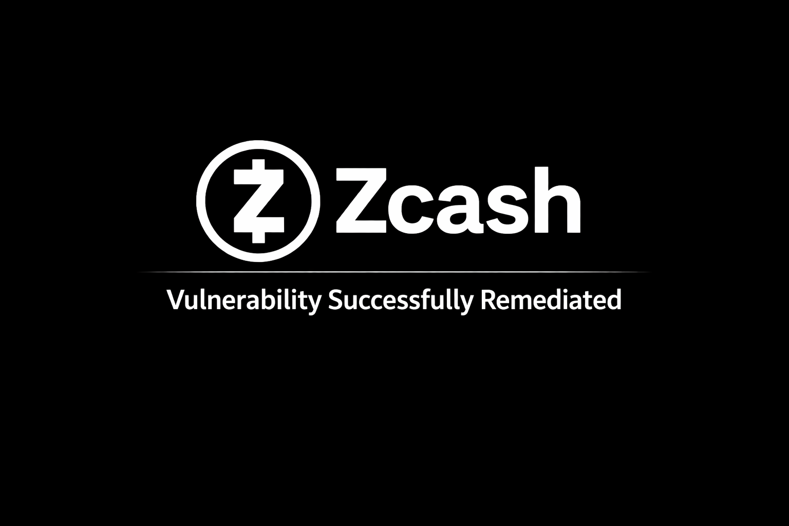
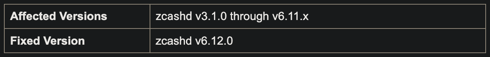

Zcash Vulnerability Successfully Remediated

[*] Shielded Labs, [†] Zcash Open Development Lab
Key Points
A vulnerability in zcashd caused nodes to skip Sprout proof verification when processing new blocks.
The bug was not exploited. All users’ funds, including those in the Sprout pool, are safe.
The bug could have only affected the deprecated Sprout pool, containing around 25k ZEC. Zcash’s turnstile mechanism would have prevented any inflation of the ZEC supply, which currently stands at around 16,630k ZEC.
User privacy was not at risk.
The vulnerability was responsibly disclosed by security researcher Alex “Scalar” Sol on March 23, 2026. A patch was developed by engineers at Zcash Open Development Lab (ZODL) and deployed by all major mining pools within three days.
Zebra, the full node implementation developed by the Zcash Foundation, was not affected and would have triggered a chain fork if exploitation had been attempted.

Summary
Security researcher Alex “Scalar” Sol identified a vulnerability in zcashd that could have allowed invalid transactions introduced by a miner to be accepted under certain conditions, potentially draining user funds from the old, deprecated Sprout pool. The vulnerability had no impact on user privacy.
Protocol engineers from Zcash Open Development Lab (ZODL) developed a fix for the bug, which has been deployed by mining pools that comprise a supermajority of the hash power.
The bug was not exploited, and all user funds, including those held in the Sprout pool, are safe. You can verify this by running Zebra or the latest release of zcashd (v6.12.0). Each of those implementations verifies that only valid transactions have been added to the Zcash blockchain, proving that the bug was not exploited before the fix was deployed by mining pools.
The vulnerability was reported privately and handled through coordinated disclosure by Shielded Labs and ZODL engineers, in coordination with mining pools.
Importantly, this bug, and bugs like this one, could not have been used to inflate the overall supply of ZEC. Zcash implements “turnstiles” between value pools (the transparent pool; the old, deprecated Sprout pool; the Sapling pool; and the current Orchard pool), which serve as “blast doors,” limiting the blast radius of a potential exploit. The Sprout turnstile limits the amount of ZEC that can be withdrawn from the Sprout pool, preventing inflation of the total supply of ZEC and protecting users who store their ZEC in other value pools from being affected by this bug or similar bugs.
This bug could not have been used to violate Zcash users’ privacy. Zcash user privacy is protected by end-to-end encryption between the user’s wallets, and the behavior of the Zcash miners and full nodes —even if there is a bug in their code— cannot violate user privacy.
The Zebra full node implementation, written and maintained by the Zcash Foundation, has been live on the Zcash Mainnet since July 2023. Zebra never had this vulnerability, and if there had been an attempt to exploit it, Zebra would have created a chain fork of the Zcash blockchain that contained only valid transactions.
Background
Sprout was the original shielded pool. It went live with the launch of Zcash in October 2016. The improved Sapling pool was added in October of 2018, and Sprout was deprecated by ZIP 211 in November of 2020.
A previous vulnerability that could have affected Sprout users, which stemmed from an error in a pre-Zcash cryptography paper, was discovered and fixed in 2018.
It is not possible to deposit funds into the Sprout pool. No wallets currently support creating new Sprout transactions, except to withdraw existing funds from Sprout to other pools using the zcashd internal wallet.
As of this writing, the Sprout pool holds approximately 25,424 ZEC.
Third Party Disclosure
Alex “Scalar” Sol reported the issue to Shielded Labs on March 23, 2026.
Following receipt of the report, Shielded Labs coordinated with ZODL core engineers to validate the issue and develop a patch. The patch was authored by Jack Grigg (str4d) and reviewed by Daira-Emma Hopwood and Kris Nuttycombe.
Shielded Labs led outreach to mining pools and infrastructure providers to deploy the patch.
Mining pools, including ViaBTC, Luxor, F2Pool, and AntPool, were contacted directly to coordinate upgrades.
Timeline
October 28, 2016
- Zcash launched with the Sprout shielded pool.
October 28, 2018
- The Sapling shielded pool launched.
- CVE-2019-7167 fixed.
July 28, 2020
- This vulnerability is first present in zcashd v3.1.0.
November 18, 2020
- Sprout pool closed to new deposits (ZIP 211).
June 14, 2023
- Zebra 1.0.0 released, validating all transactions, including Sprout transactions.
March 23, 2026
- Scalar reported the vulnerability to Shielded Labs.
March 24, 2026
- Shielded Labs met with ZODL engineers Daira-Emma Hopwood, Kris Nuttycombe, and Jack Grigg (str4d) to review and validate the vulnerability and develop a fix. Str4d wrote the patch, and Daira-Emma Hopwood and Kris Nuttycombe reviewed it.
- Shielded Labs disclosed the issue to the Zcash Foundation.
- Shielded Labs reached out to Zcash mining pools ViaBTC, Luxor, and F2Pool.
March 25, 2026
- Luxor confirmed deployment of the patch.
- Shielded Labs reached out to AntPool.
March 26, 2026
- F2Pool confirmed deployment of the patch.
- ViaBTC confirmed deployment of the patch.
- AntPool confirmed deployment of the patch.
March 31, 2026
- Zcashd v6.12.0 released.
Vulnerability Details
The vulnerability was due to zcashd nodes failing to verify Sprout proofs when a new block was connected to the chain tip.
The bug was introduced by a code optimization included in the zcashd v3.1.0[1] release on July 28th, 2020, in the zcashd block validation logic, specifically in how Sprout proof verification is handled during block processing.
In the normal validation flow, CheckBlock is invoked twice: once during block acceptance and again during block connection. To avoid performing costly proof verification twice, Sprout proof verification is intended to be deferred to the second pass[2]. However, this interacted badly with an optimization inherited from Bitcoin Core: the CBlock::fChecked flag acts as a cache of verification state. When set, it causes CheckBlock to return early and skip further validation. In affected versions, the first pass could erroneously set the fChecked flag, marking the entire block as validated[3]. As a result, in the second pass, CheckBlock would return early, and Sprout proofs would not be verified at all[4].
Sprout proofs were being correctly verified when transactions were accepted into the mempool, or when the node was reindexing. The bug, therefore, created a scenario in which invalid transactions could be accepted if a malicious miner inserted them into a block. If exploited, it could have resulted in loss of user funds in the Sprout pool unless the exploit transaction were reversed by miners rolling back the entire Zcash blockchain to before the exploit block.
The patch[5] ensures that fChecked is set only after all validation steps, including strict Sprout proof verification, have been completed. This restores the invariant that Sprout proofs are always verified before a block is accepted.
[1] https://github.com/zcash/zcash/releases/tag/v3.1.0
[2] https://github.com/zcash/zcash/blob/db969c63f48f0f9fc518112ed0b7ace1af78b9d0/src/main.cpp#L3103
[3] https://github.com/zcash/zcash/blob/db969c63f48f0f9fc518112ed0b7ace1af78b9d0/src/main.cpp#L4939
[4] https://github.com/zcash/zcash/blob/db969c63f48f0f9fc518112ed0b7ace1af78b9d0/src/main.cpp#L4878
[5] https://github.com/zcash/zcash/commit/db969c63f48f0f9fc518112ed0b7ace1af78b9d0
Acknowledgements
Thanks to Alex “Scalar” Sol for discovering the bug with the help of AI and responsibly disclosing it to protect Zcash users, and to David Burkett (Litecoin’s MWEB Developer) for assisting in the responsible disclosure. Scalar did not request a bounty or mention money, but Shielded Labs, ZODL, Zcash Foundation, and Bootstrap have each agreed to award him 50 ZEC each (for a total of 200 ZEC) in gratitude for protecting Zcash users and strengthening Zcash.
Special thanks to the developers at ZODL (Daira-Emma Hopwood, Kris Nuttycombe, and Jack Grigg) for their prompt review and fix.
We also thank the Zcash Foundation for their work on Zebra. The presence of Zebra nodes, which correctly verified Sprout proofs, provided an important layer of protection. Once Zebra was live on Zcash Mainnet, an attempted exploitation would have resulted in a chain fork, helping us to more rapidly detect and remediate the issue.
We also extend our thanks to Luxor, F2Pool, Antpool, and ViaBTC for applying the patch to their mining pools.